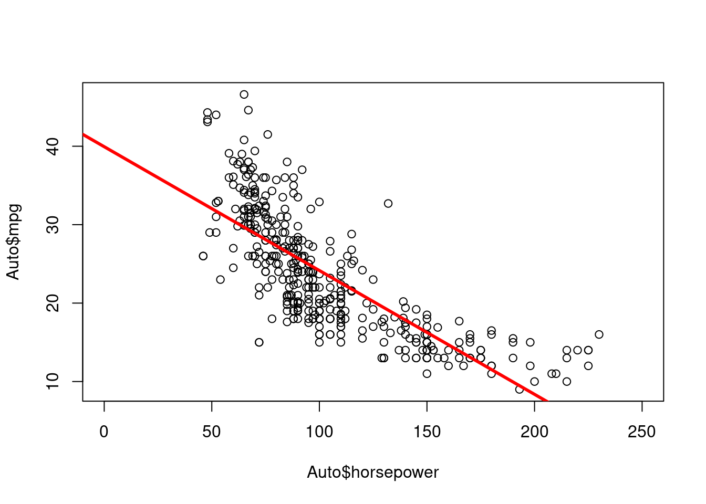
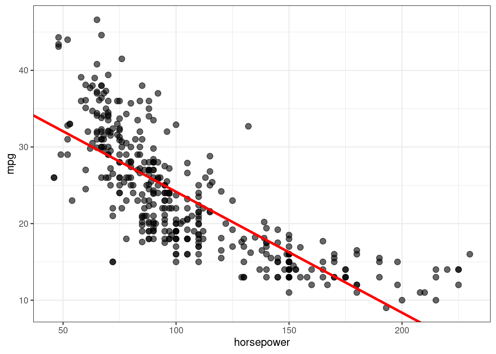
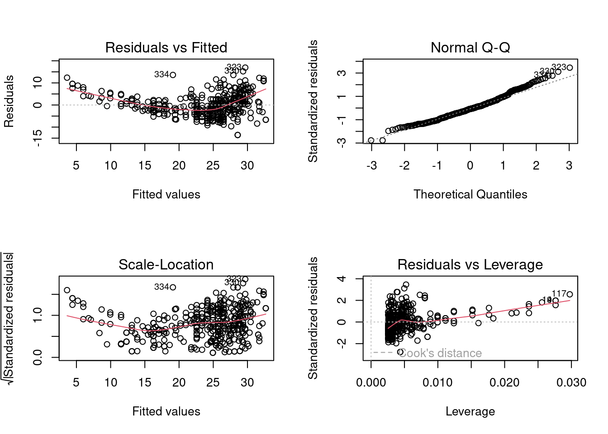
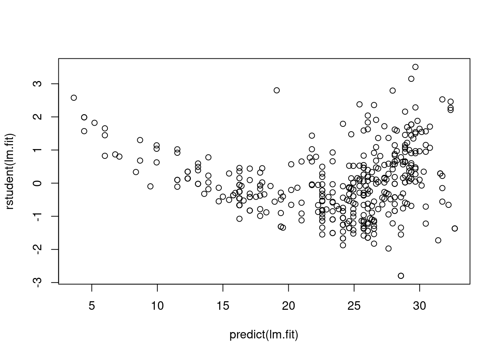
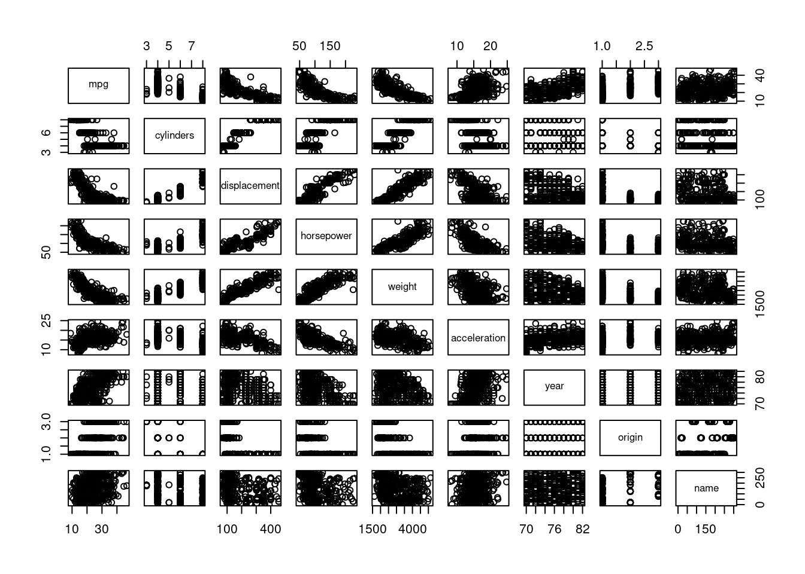
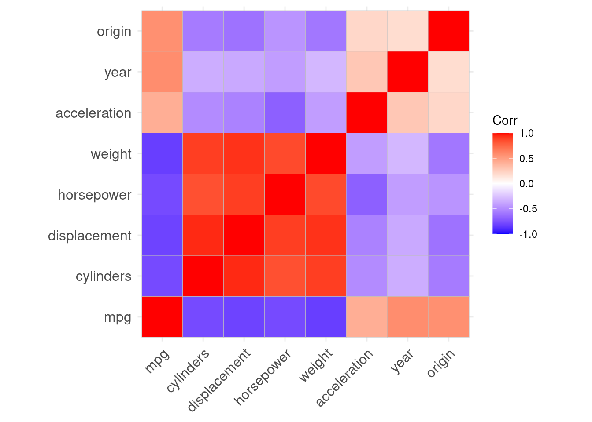
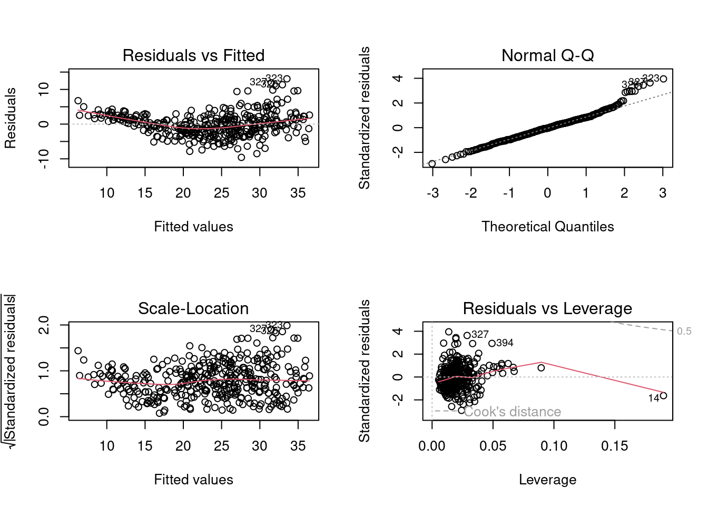
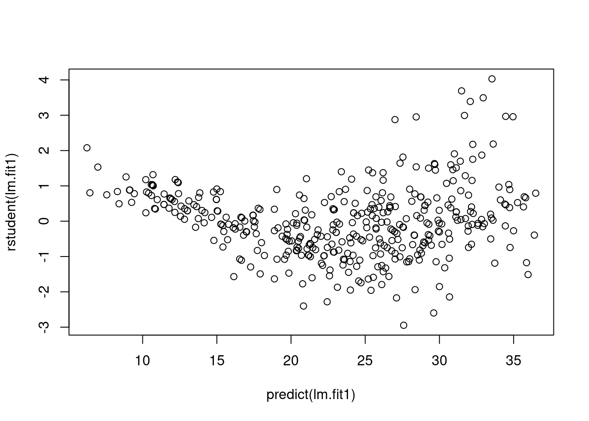

library(tidyverse)
library(ISLR2)💻 Week 03 - Lab Roadmap (90 min)
DS202 - Data Science for Social Scientists
This week, we will fit simple and multiple linear regression models in R and learn to interpret the R output. We will apply this method to practical cases and deal with problems that commonly arise during this process.
Already know linear regression?
If you already know linear regression from previous courses you have taken, why not take this knowledge to next level? Try to find a dataset online that contains a numerical variable you could predict by fitting a linear regression to it. I will be curious to see what you find. Share your findings on the #week03 channel in our Slack.
You might want to check out, for example, Data is Plural, run by Buzzfeed’s former data editor 🧑 Jeremy Singer-Vine. People send him interesting/funny/odd datasets and he shares them in this website and on a weekly newsletter.
Step 1: Simple linear regression (15 min)
Step 1: Simple linear regression
We will follow the instructions below step by step together while answering whatever questions you might encounter along the way.
Install and load the
ISLR2package, which contains a large collection of data sets and functions.install.packages("ISLR2"). library (ISLR2)The function
install.packages()is used to download packages that don’t come with R. This installation only needs to be done the first time you use a package. However, thelibrary()function must be called within each R session to load packages.Use the
Bostondata set in theISLR2library. It recordsmedv(median house value) for 506 census tracts in Boston. Have a look at the first few rows of the Boston data set:head (Boston) crim zn indus chas nox rm age dis rad tax ptratio lstat medv 1 0.00632 18 2.31 0 0.538 6.575 65.2 4.0900 1 296 15.3 4.98 24.0 2 0.02731 0 7.07 0 0.469 6.421 78.9 4.9671 2 242 17.8 9.14 21.6 3 0.02729 0 7.07 0 0.469 7.185 61.1 4.9671 2 242 17.8 4.03 34.7 4 0.03237 0 2.18 0 0.458 6.998 45.8 6.0622 3 222 18.7 2.94 33.4 5 0.06905 0 2.18 0 0.458 7.147 54.2 6.0622 3 222 18.7 5.33 36.2 6 0.02985 0 2.18 0 0.458 6.430 58.7 6.0622 3 222 18.7 5.21 28.7We want to predict
medvusing the available predictors, such asrm(average number of rooms per house),age(average age of houses), andlstat(percentage of households with low socioeconomic status). To find out more about the data set, we can type?Boston.Fit a simple linear regression
lm()model, withmedvas the response andlstatas the predictor:> lm.fit <- lm(medv ~ lstat , data = Boston)The basic syntax is
lm(y ∼ x, data), whereyis the response,xis the predictor, anddatais the data set in which we keep these two variables.Use the
tidyfunction to create a dataframe with columns for the estimate, standard error, f-statistic (estimate/standard error), p-values, and 95 percent confidence intervals:installing/loading broom:
install.packages("broom") library(broom)> tidy(lm.fit, conf.int = TRUE) # A tibble: 2 × 7 term estimate std.error statistic p.value conf.low conf.high <chr> <dbl> <dbl> <dbl> <dbl> <dbl> <dbl> 1 (Intercept) 34.6 0.563 61.4 3.74e-236 33.4 35.7 2 lstat -0.950 0.0387 -24.5 5.08e- 88 -1.03 -0.874Because
lm.fitis a simple linear regression model, there are only two coefficients: \(\hat{\beta}_0\) and \(\hat{\beta}_1\). The goodness-of-fit of the model can be measured by the \(R^2\) in the output, which can be obtained (along with other model statistics) using theglancefunction.> glance(lm.fit)$r.squared [1] 0.5441463Plot
medvandlstatalong with the least squares regression line using thegeom_point()andgeom_abline()functions.::library(tidyverse) > ggplot(data = Boston, aes(x = lstat, y = medv)) + geom_point() + geom_abline(intercept = lm.fit$coefficients[1], slope = lm.fit$coefficients[2])
Step 2: Multiple linear regression (10 min)
Step 2: Multiple linear regression
We will still use the Boston data set to fit multiple linear regression. The fitting process is similar to simple linear regression.
Fit a multiple linear regression
lm()model, withmedvas the response,lstatandageas the predictors:> lm.fit <- lm(medv ~ lstat + age , data = Boston) > tidy(lm.fit, conf.int = TRUE) # A tibble: 3 × 7 term estimate std.error statistic p.value conf.low conf.high <chr> <dbl> <dbl> <dbl> <dbl> <dbl> <dbl> 1 (Intercept) 33.2 0.731 45.5 2.94e-180 31.8 34.7 2 lstat -1.03 0.0482 -21.4 8.42e- 73 -1.13 -0.937 3 age 0.0345 0.0122 2.83 4.91e- 3 0.0105 0.0586The syntax
lm(y ~ x1 + x2 + x3)is used to fit a model with three predictors,x1,x2, andx3. Thetidy()function now outputs the regression coefficients for all the predictors.Fit a multiple linear regression
lm()model, withmedvas the response, all rest variables as the predictors:> lm.fit <- lm(medv ~ ., data = Boston) > tidy(lm.fit, conf.int = TRUE) # A tibble: 13 × 7 term estimate std.error statistic p.value conf.low conf.high <chr> <dbl> <dbl> <dbl> <dbl> <dbl> <dbl> 1 (Intercept) 41.6 4.94 8.43 3.79e-16 31.9 51.3 2 crim -0.121 0.0330 -3.68 2.61e- 4 -0.186 -0.0565 3 zn 0.0470 0.0139 3.38 7.72e- 4 0.0197 0.0742 4 indus 0.0135 0.0621 0.217 8.29e- 1 -0.109 0.136 5 chas 2.84 0.870 3.26 1.17e- 3 1.13 4.55 6 nox -18.8 3.85 -4.87 1.50e- 6 -26.3 -11.2 7 rm 3.66 0.420 8.70 4.81e-17 2.83 4.48 8 age 0.00361 0.0133 0.271 7.87e- 1 -0.0226 0.0298 9 dis -1.49 0.202 -7.39 6.17e-13 -1.89 -1.09 10 rad 0.289 0.0669 4.33 1.84e- 5 0.158 0.421 11 tax -0.0127 0.00380 -3.34 9.12e- 4 -0.0202 -0.00521 12 ptratio -0.938 0.132 -7.09 4.63e-12 -1.20 -0.678 13 lstat -0.552 0.0507 -10.9 6.39e-25 -0.652 -0.452
We can access the individual components of a summary object by name (type ?glance to see what is available). Hence glance(lm.fit)$r.squared gives us the \(R^2\).
Select variables:
In these two multiple linear regression models, the t-tests and F-test results suggest that many of the predictors are significant for the response variable. However, some do not achieve statistical significance. Can you see which variables these are?
We call the process of determining which predictors are associated with the response as variable selection.
If the number of predictors is very small, we could perform the variable selection by trying out a lot of different models, each containing a different subset of the predictors. We can then select the best model out of all of the models we have considered.
Using the template below, try figuring out the model which produces the highest adjusted \(R^2\). The adjusted \(R^2\) has a similar interpretation to \(R^2\), only it is an advantage here as it penalises models that include insignificant parameters.
lm.fit <- lm(medv ~ ., data = Boston) glance(lm.fit)$adj.r.squared [1] 0.7278399We found that if you remove
indusandage, the adjusted \(R^2\) becomes slightly larger compared to including all predictors.lm.fit <- lm(medv ~ ., data = Boston[,-c(3,7)]) glance(lm.fit)$adj.r.squared [1] 0.7288734
Step 3: Some potential problems (15 min)
Step 3: Some potential problems
Many problems may occur when we fit a linear regression model to a particular data set. These problems will lead to inaccurate estimation. In this step, we will identify and overcome potential problems such as outliers, collinearity and interaction effects.
We present a few of the many methods available, but those interested can explore more after class.
Handle interaction terms:
In regression, an interaction effect exists when the effect of an independent variable on the response variable changes, depending on the values of one or more independent variables. When you believe there is an interaction effect, it is easy to include interaction terms in a linear model using the
lm()function.> tidy(lm(medv ~ lstat * age , data = Boston)) # A tibble: 4 × 5 term estimate std.error statistic p.value <chr> <dbl> <dbl> <dbl> <dbl> 1 (Intercept) 36.1 1.47 24.6 4.91e-88 2 lstat -1.39 0.167 -8.31 8.78e-16 3 age -0.000721 0.0199 -0.0363 9.71e- 1 4 lstat:age 0.00416 0.00185 2.24 2.52e- 2The syntax
lstat:agetells R to include an interaction term between lstat and age. The syntaxlstat*agesimultaneously includeslstat,age, and the interaction termlstat×ageas predictors; it is a shorthand forlstat+age+lstat:age.Identify outliers through residual plots:
An outlier is a point for which \(\hat{y}_i\) is far from the value predicted by the model. Outliers can arise for a variety of reasons, such as incorrect recording of observation during data collection. Outliers could be identified through residual plots:
> par(mfrow = c(2, 2)) > plot(lm.fit)The
plotfunction automatically produces four diagnostic plots when you pass the output fromlm(). Plots on the left column are residual plots, indicating the relationship between residuals and fitted values.In practice, it can be difficult to decide how large a residual needs to be before we consider the point to be an outlier. Instead of plotting the residuals, we can address this problem by plotting the studentized residuals. These are computed by dividing each residual ei by its estimated standard studentized residual error. Observations with studentized residuals greater than 3 in absolute value are possible outliers. Using the plot() function to plot the studentized residuals:
> plot(predict(lm.fit), rstudent(lm.fit)Handle outliers:
If we believe an outlier is due to an error in data collection or recording, then one solution is to simply remove the observation. However, care should be taken, as an outlier may instead signal a deficiency with our model, such as a missing predictor.
Detect multicollinearity using the correlation matrix:
Multicollinearity refers to the situation in which two or more predictor variables are highly correlated to one another. It can be detected through the correlation matrix:
cor(Boston)Ignoring the last row and the last column in the matrix, which indicate the relationship with response variable
medv, an element of this matrix that is large in absolute value indicates a pair of highly correlated variables, and therefore a collinearity problem in the data.We can detect multicollinearity quantitatively using
vif()function in the `car’ package:install.packages("car")) library(car)> vif(lm.fit)Instead of inspecting the correlation matrix, a better way to assess multicollinearity is to compute the variance inflation factor (VIF). As a rule of thumb, a VIF value that exceeds 5 or 10 indicates a problematic amount of collinearity.
Read more about VIF
Check out our textbook (James et al. 2021, 99–103) for a description of the Variance Inflation Factor (VIF).
Handle collinearity:
When faced with the problem of multicollinearity, there are two simple solutions.
-The first is to drop one of the problematic variables from the regression.
-The second solution is to combine the collinear variables into a single predictor, where such combination makes theoretical sense.
Step 4: Practical exercises (50 min)
Step 4: Practical exercises (in pairs)
So far, we have learnt to fit simple and multiple linear regression models in R. In this practical case, we will continue to use the data set Auto studied in the last lab. Make sure that the missing values have been removed from the data.
Eight questions are listed below. You are required to try to answer these questions in pairs using R commands. We will go over the solutions once everyone has finished these questions.
🯠Questions
Use the
lm()function to perform a simple linear regression withmpgas the response andhorsepoweras the predictor. Use thetidy()function to print the results. Comment on the output. For example:- Is there a relationship between the predictor and the response?
- How strong is the relationship between the predictor and the response?
- Is the relationship between the predictor and the response positive or negative?
- What is the predicted
mpgassociated with ahorsepowerof 98? What are the associated 95 % confidence intervals?
Plot the response and the predictor. Use the
geom_abline()function to display the least squares regression line.Use the
plot()function to produce diagnostic plots of the least squares regression fit. Comment on any problems you see with the fit.Produce a scatterplot matrix that includes all the variables in the data set.
Compute the matrix of correlations between the variables using the function
cor(). You will need to exclude thenameandoriginvariable, which are qualitative.Use the
lm()function to perform a multiple linear regression withmpgas the response and all other variables exceptnameas the predictors. Use thetidy()function to print the results. Comment on the output. For instance:- Is there a relationship between the predictors and the response?
- Which predictors appear to have a statistically significant relationship to the response?
- What does the coefficient for the year variable suggest?
Use the
plot()function to produce diagnostic plots of the linear regression fit. Comment on any problems you see with the fit. Do the residual plots suggest any unusually large outliers?Use the
*and:symbols to fit linear regression models with interaction effects. Do any interactions appear to be statistically significant?
Tip
If you could not finish all eight questions during the lab, take that as a home exercise.
Use the #week03 channel on Slack if you have any questions.
🔑 Solutions to practical exercises
🔑 Solutions to exercises
Q1
Use the lm() function to perform a simple linear regression with mpg as the response and horsepower as the predictor. Use the tidy() function to print the results. Comment on the output.
For example:
- Is there a relationship between the predictor and the response?
- How strong is the relationship between the predictor and the response?
- Is the relationship between the predictor and the response positive or negative?
- What is the predicted
mpgassociated with ahorsepowerof 98? What are the associated 95 % confidence intervals?
Auto <- na.omit(Auto)
lm.fit <- lm(mpg ~ horsepower, data = Auto)
summary(lm.fit)
Call:
lm(formula = mpg ~ horsepower, data = Auto)
Residuals:
Min 1Q Median 3Q Max
-13.5710 -3.2592 -0.3435 2.7630 16.9240
Coefficients:
Estimate Std. Error t value Pr(>|t|)
(Intercept) 39.935861 0.717499 55.66 <2e-16 ***
horsepower -0.157845 0.006446 -24.49 <2e-16 ***
---
Signif. codes: 0 '***' 0.001 '**' 0.01 '*' 0.05 '.' 0.1 ' ' 1
Residual standard error: 4.906 on 390 degrees of freedom
Multiple R-squared: 0.6059, Adjusted R-squared: 0.6049
F-statistic: 599.7 on 1 and 390 DF, p-value: < 2.2e-16Regarding to the p-values of t-test and F-test, there is a strong relationship between the predictor horsepower and the response mpg. From the sign of coefficients, the relationship between the predictor and the response is negative. Using the function predict() to predict the value of response and the confidence interval, we get:
predict(lm.fit, data.frame(horsepower = 98), interval = "confidence") fit lwr upr
1 24.46708 23.97308 24.96108Therefore, the predicted mpg associated with a horsepower of 98 is 24.47, and the associated 95 % confidence interval is [23.97308, 24.96108].
Q2
Pot the response and the predictor. Use the geom_abline() function to display the least squares regression line.
In base R (without using any tidverse or any other package):
plot(Auto$horsepower, Auto$mpg, xlim = c(0, 250))
abline (lm.fit, lwd = 3, col = "red")
Using ggplot (from tidyverse):
ggplot(data = Auto, aes(x = horsepower, y = mpg)) +
geom_point(alpha=0.6, size=2.5) +
geom_abline(intercept = lm.fit$coefficients[1],
slope = lm.fit$coefficients[2],
color="red", size=1.2) +
theme_bw()Warning: Using `size` aesthetic for lines was deprecated in ggplot2 3.4.0.
ℹ Please use `linewidth` instead.
Q3
Use the plot() function to produce diagnostic plots of the least squares regression fit. Comment on any problems you see with the fit.*
par(mfrow = c(2, 2))
plot(lm.fit)
By observing four diagnostic plots, we could find non-linear pattern in residual plots. The quadratic trend of the residuals could be a problem. Then we plot studentized residuals to identify outliers:
plot(predict(lm.fit), rstudent(lm.fit))
There are possible outliers as seen in the plot of studentized residuals because there are data with a value greater than 3.
Q4
Produce a scatterplot matrix that includes all the variables in the data set.
pairs(Auto)
Q5
Compute the matrix of correlations between the variables using the function cor(). You will need to exclude the name and origin variable, which is qualitative.
cor(subset(Auto, select = -name)) mpg cylinders displacement horsepower weight
mpg 1.0000000 -0.7776175 -0.8051269 -0.7784268 -0.8322442
cylinders -0.7776175 1.0000000 0.9508233 0.8429834 0.8975273
displacement -0.8051269 0.9508233 1.0000000 0.8972570 0.9329944
horsepower -0.7784268 0.8429834 0.8972570 1.0000000 0.8645377
weight -0.8322442 0.8975273 0.9329944 0.8645377 1.0000000
acceleration 0.4233285 -0.5046834 -0.5438005 -0.6891955 -0.4168392
year 0.5805410 -0.3456474 -0.3698552 -0.4163615 -0.3091199
origin 0.5652088 -0.5689316 -0.6145351 -0.4551715 -0.5850054
acceleration year origin
mpg 0.4233285 0.5805410 0.5652088
cylinders -0.5046834 -0.3456474 -0.5689316
displacement -0.5438005 -0.3698552 -0.6145351
horsepower -0.6891955 -0.4163615 -0.4551715
weight -0.4168392 -0.3091199 -0.5850054
acceleration 1.0000000 0.2903161 0.2127458
year 0.2903161 1.0000000 0.1815277
origin 0.2127458 0.1815277 1.0000000A nicer way to plot correlations is through the package ggcorrplot:
library(ggcorrplot)
ggcorrplot(cor(Auto %>% select(-c(name))))
Q6
Use the lm() function to perform a multiple linear regression with mpg as the response and all other variables except name as the predictors. Use the tidy() function to print the results. Comment on the output.
For instance:
- Is there a relationship between the predictors and the response?
- Which predictors appear to have a statistically significant relationship to the response?
- What does the coefficient for the year variable suggest?
lm.fit1 <- lm(mpg ~ . -name, data = Auto)
summary(lm.fit1)
Call:
lm(formula = mpg ~ . - name, data = Auto)
Residuals:
Min 1Q Median 3Q Max
-9.5903 -2.1565 -0.1169 1.8690 13.0604
Coefficients:
Estimate Std. Error t value Pr(>|t|)
(Intercept) -17.218435 4.644294 -3.707 0.00024 ***
cylinders -0.493376 0.323282 -1.526 0.12780
displacement 0.019896 0.007515 2.647 0.00844 **
horsepower -0.016951 0.013787 -1.230 0.21963
weight -0.006474 0.000652 -9.929 < 2e-16 ***
acceleration 0.080576 0.098845 0.815 0.41548
year 0.750773 0.050973 14.729 < 2e-16 ***
origin 1.426141 0.278136 5.127 4.67e-07 ***
---
Signif. codes: 0 '***' 0.001 '**' 0.01 '*' 0.05 '.' 0.1 ' ' 1
Residual standard error: 3.328 on 384 degrees of freedom
Multiple R-squared: 0.8215, Adjusted R-squared: 0.8182
F-statistic: 252.4 on 7 and 384 DF, p-value: < 2.2e-16Yes, there is a relationship between the predictors and the response by testing the null hypothesis of whether all the regression coefficients are zero. The F-statistic is far from 1 (with a small p-value), indicating evidence against the null hypothesis.
Observing the p-values associated with each predictor’s t-statistic, we see that displacement, weight, year, and origin have a statistically significant relationship, while cylinders, horsepower and acceleration do not.
The regression coefficient for year is 0.75. This suggests that, considering all other predictors fixed, mpg increases by additional 0.75 unit. In other words, cars become more fuel efficient every year by almost 1 mpg/year.
Q7
Use the plot() function to produce diagnostic plots of the linear regression fit. Comment on any problems you see with the fit. Do the residual plots suggest any unusually large outliers?
par(mfrow = c(2, 2))
plot(lm.fit1)
From the leverage plot, we see that point 14 appears to have a high leverage, although not a high magnitude residual. Besides, the quadratic trend of the residuals could be a problem. Maybe linear regression is not the best fit for this prediction.
We plot studentized residuals to identify outliers:
plot(predict(lm.fit1), rstudent(lm.fit1))
There are possible outliers as seen in the plot of studentized residuals because there are data with a value greater than 3.
Q8
Use the * and : symbols to fit linear regression models with interaction effects. Do any interactions appear to be statistically significant?
lm.fit2 <- lm(mpg ~ cylinders * displacement + displacement * weight, data = Auto)
summary(lm.fit2)
Call:
lm(formula = mpg ~ cylinders * displacement + displacement *
weight, data = Auto)
Residuals:
Min 1Q Median 3Q Max
-13.2934 -2.5184 -0.3476 1.8399 17.7723
Coefficients:
Estimate Std. Error t value Pr(>|t|)
(Intercept) 5.262e+01 2.237e+00 23.519 < 2e-16 ***
cylinders 7.606e-01 7.669e-01 0.992 0.322
displacement -7.351e-02 1.669e-02 -4.403 1.38e-05 ***
weight -9.888e-03 1.329e-03 -7.438 6.69e-13 ***
cylinders:displacement -2.986e-03 3.426e-03 -0.872 0.384
displacement:weight 2.128e-05 5.002e-06 4.254 2.64e-05 ***
---
Signif. codes: 0 '***' 0.001 '**' 0.01 '*' 0.05 '.' 0.1 ' ' 1
Residual standard error: 4.103 on 386 degrees of freedom
Multiple R-squared: 0.7272, Adjusted R-squared: 0.7237
F-statistic: 205.8 on 5 and 386 DF, p-value: < 2.2e-16Interaction between displacement and weight is statistically signifcant, while the interaction between cylinders and displacement is not.
References
James, Gareth, Daniela Witten, Trevor Hastie, and Robert Tibshirani. 2021. An Introduction to Statistical Learning: With Applications in R. Second edition. Springer Texts in Statistics. New York NY: Springer. https://www.statlearning.com/.